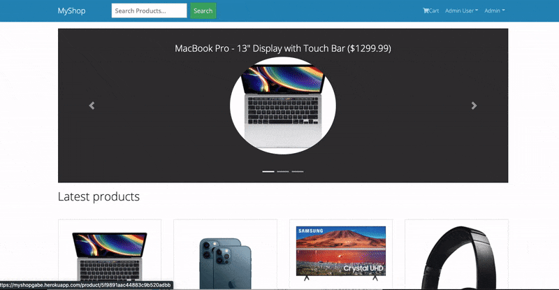

Gabriel Fernandez
Full-Stack Developer
Graduate of Coding Dojo Bootcamp, currently seeking new positions. Years of work experience, including two years for major tech companies. An agile learner that can pick up new technologies. Eager to integrate my work experience and my new set of skills.
This is my portfolio.
Featured Projects
View selected projects below. More projects can be found on my GitHub Profile.
Blogger

This is a blog app where users can post and view blog posts about certain categories. Users have full CRUD functionality on their posts. Implemented user login/registration. Users can also interact with each other by leaving comments on specific posts. The app displays feature posts/categories. App also includes admin functionality.
Built with Django, MySQL, Bootstrap, Crispy Forms, Pillow, FontAwesome, Recaptcha & AWS EC2.
View Deployed Project GitHub RepoMyShop
This is a full functional eCommerce app built using the MERN STACK. Customers can purchase items and checkout with PayPal or with Credit/Debt Card. Customers can leave a review on a product. Admin can upload/edit products and manage orders.
Built with: React, Redux, MongoDB Atlas, Mongoose, Express, Node, Bcrypt, JSONWebToken, Bootstrap, PayPal, & Heroku.
View Deployed Project GitHub RepoMovieDB API

Users can search movies by utilizing MovieDB API. The detail page displays key details about the movie, including poster backdrops and a trailer. The Home page loads popular, upcoming, and new movies.
Built with React, Redux, Axios, Framer Motion, Styled Components, MovieDB API & Firebase.
View Deployed Project GitHub RepoWork Experience
A complete work history can be found on my LinkedIn Profile
GIS Researcher
Apple (Contractor via Apex Systems
Mar 2019- Mar 2020
I was recently a GIS Researcher for Apple as a contractor. In this role, I began analyzing aerial imagery to highlight changes to the mapped network. Due to my success, I took more of a QA role, checking other researchers' work. In this role, I developed my cross-functional skills as I communicated information among multiple teams. I developed my analytics skills as this position was heavily reliant on metrics. Priorities change frequently in the tech industry and I can adapt and focus my attention on the projects that needed to be completed.
Tax Operations Intern
Oracle
Jan 2018- Oct 2018
As a Tax Operations Intern for Oracle, I had a key role in the source to settle business process as I helped manage suppliers with registering, contracting, purchasing and payment. With this role, I developed my data analysis skills. I used Excel and Oracle Business Intelligence tools to help suppliers with the creation of services and payments to ensure Tax and Treasury services for Oracle. Here I gained experience in Project Management as I routinely manage status update meetings to other analysts, managers, and suppliers. I managed trackers to ensure projects are completed. I performed metric updates to ensure our department was on track with tax managers' service requests and our suppliers received payments promptly.
Education
University of California, Davis
Economics & Political Science, 2017
Coding Dojo
Full-Stack Web Development Certificate 2020